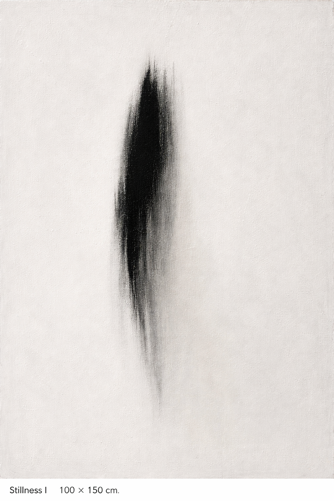

Stillness
An abstract painting series grounded in silence, restraint, and presence through minimal gesture.
Stillness Series


About
Stillness is a body of work focus on quiet moments where gesture is reduced and attention is invited rather than demanded.
Each painting is composed through restraint. What remains is deliberate: a surface, a pause, a single act. The work does not seek to explain itself, but only encountered.
Contact
For inquiries, collections, or exhibitions: